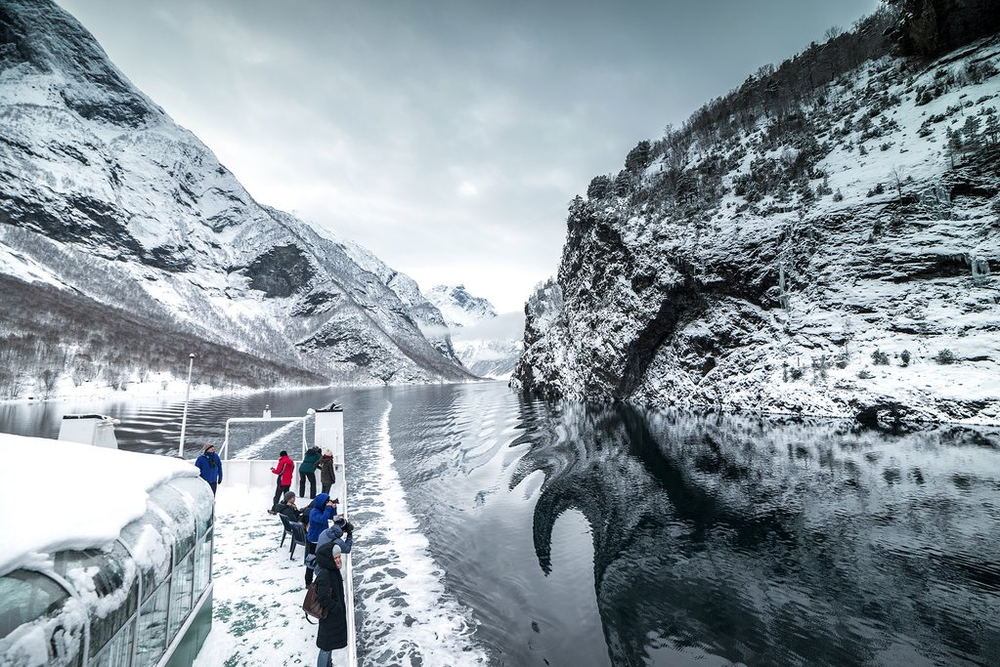
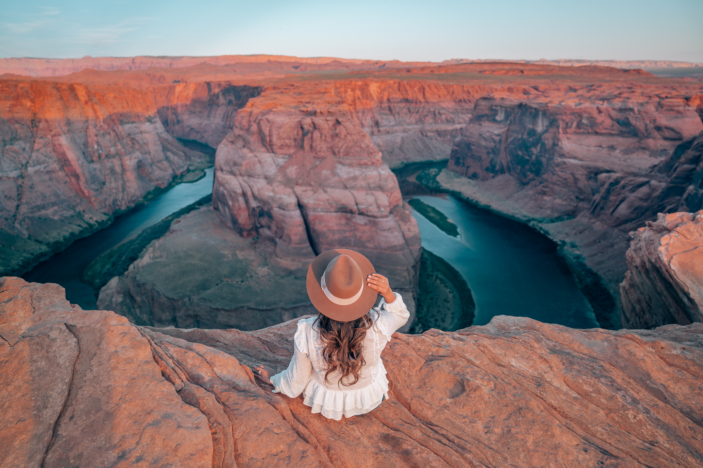
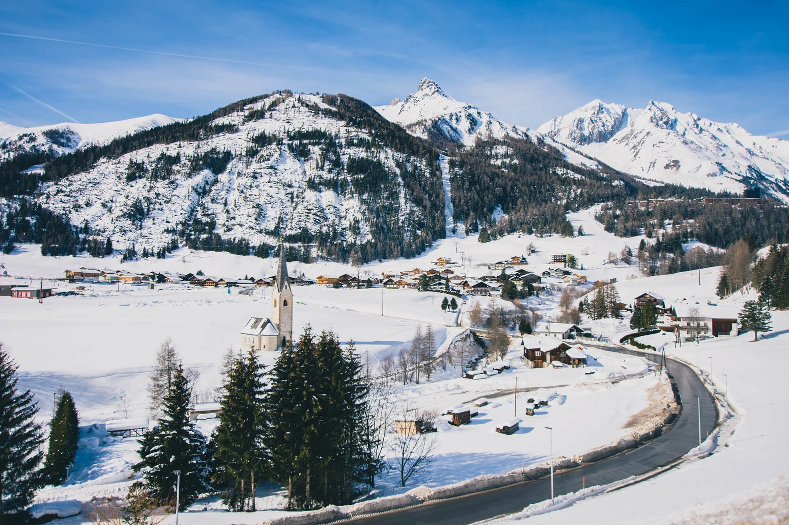

Explore the World
We seek to provide the most authentic content from athletes, adventures,
explorers, and travellers around the world. Our long term mission is to educate,
inspire, and enable all people to experience & protect wilderness.



The Journal
Our favorite stories about public lands and opportunities for you to get
involved in protecting your outdoor experience
An Unforgettable
If you only have one day to visit. Yosmite National Park
and you want to make the most out of it.
Symphonies in Steel
Crossing the Golden Gate Bridge from San Franscisco, you arrive in Marin even before landing on solid ground.
Don't be afraid
Start your journey NOW!
We will help you fullfil your adventure